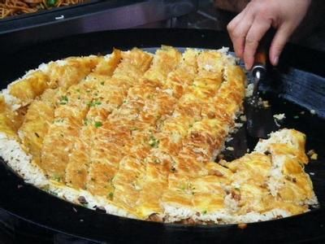

豆皮
豆皮是武汉的传统小吃之一，以其香脆可口而闻名。
豆皮是武汉的传统小吃，以其薄如纸的外皮和丰富的馅料而闻名。豆皮的制作原料主要是绿豆和大米混合磨成的浆，烙制成皮，然后包裹上糯米、肉末、香菇等馅料，蒸熟而成。豆皮外皮金黄酥脆，内馅软糯鲜香，是武汉人早餐和小吃中不可或缺的一部分。


豆皮是武汉的传统小吃之一，以其香脆可口而闻名。
豆皮是武汉的传统小吃，以其薄如纸的外皮和丰富的馅料而闻名。豆皮的制作原料主要是绿豆和大米混合磨成的浆，烙制成皮，然后包裹上糯米、肉末、香菇等馅料，蒸熟而成。豆皮外皮金黄酥脆，内馅软糯鲜香，是武汉人早餐和小吃中不可或缺的一部分。